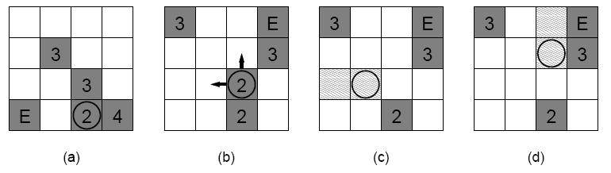

Home Page
F.A.Qs
Statistical Charts
Past Contests
Scheduled Contests
Award Contest
| Online Judge | Problem Set | Authors | Online Contests | User | ||||||
|---|---|---|---|---|---|---|---|---|---|---|
| Web Board Home Page F.A.Qs Statistical Charts | Current Contest Past Contests Scheduled Contests Award Contest | |||||||||
|
Language: The Warehouse
Description Secret Agent Θ- 7 has found the secret weapon warehouse of the mad scientist Dr. Matroid. The warehouse is full of large boxes (possibly with deadly weapons inside the boxes). While inspecting the warehouse, Θ- 7 accidentally triggered the alarm system. The warehouse has a very effective protection against intruders: if the alarm is triggered, then the floor is filled with deadly acid. Therefore, the only way Θ- 7 can escape is to climb onto the boxes and somehow reach the exit on top of them. The exit is a hole in the ceiling,if Θ- 7 can climb through this hole then he can escape using the helicopter parked on the roof. There is a ladder and a box below the hole, thus the goal is to reach this box.
The floor of the warehouse can be divided into a grid containing n x n cells, the size of each cell is 1 meter x 1 meter. Each cell is either fully occupied by one box or unoccupied. Each box is rectangular: the size of the base is 1 meter x 1 meter, and the height is either 2, 3, or 4 meters. In figure (a), you can see an example warehouse, where the numbers show the height of the boxes, E shows the exit, and the circle shows that Secret Agent Θ- 7 is currently on the top of that box.  Θ- 7 can do two things: If he is standing on top of a box, and in an adjacent cell there is another box, then he can move to the top of this other box. For example, in the situation depicted in figure (a), he can move either to north or east, but not to west or south. Note that only these four directions are allowed, diagonal moves are not possible. The height difference between the two boxes does not matter. The second thing Θ- 7 can do is that he can topple the box he is standing on in one of the four directions.The effect of toppling is best show by an example: in the situation shown in figure (b), he can topple the box west (figure (c)) or north (figure (d)). If a box of height h is toppled north (west, south, etc.) then it will occupy h consecutive cells to the north (west, south, etc.) of its original position. The original position will be unoccupied (but can be later occupied again by toppling another box). A box can onlybe toppled if the cells where it will fall are unoccupied. For example, in figure (a), the box where Θ- 7 is standing cannot be toppled in any of the four directions. By toppling a box, Θ- 7 jumps one step in the direction that the box is toppled (see figures (c) and(d)). If a box is toppled, then it cannot be toppled again later. Recall that there is a box below the exit (at the cell marked with E in the figure), thus it is not possible to topple a box over this cell. The alarm system will soon release mutant poisonous biting bats, so Θ- 7 has to leave the warehouse as quickly as possible. You have to help him by writing a program that will determine the minimum number of steps required to reach the exit. Moving to an adjacent box, or toppling a box is counted as one step. Input The input contains several blocks of test cases. The first line of each block contains three integers: the size 1 ≤ n ≤ 8 of the warehouse, and two integers i , j that describe the starting position of the secretagent. These numbers are between 1 and n ; the row number is given by i , the column number is given by j . The next n lines describe the warehouse. Each line contains a string of n characters. Each character corresponds to a cell of the warehouse. If the character is `.', then the cell is unoccupied. The characters `2', `3' and `4' correspond to boxes of height 2, 3 and 4, respectively. Finally, the character `E' shows the location of the exit.
The input is terminated by a block with n = i = j = 0 . Output For each test case, you have to output a single line containing an integer: the minimum number of stepsrequired to reach the exit. If it is not possible to reach the exit, then output the text `Impossible.'(without quotes).
Sample Input 5 5 3 .2..E ...2. 4.... ....4 ..2.. 0 0 0 Sample Output 18 Source |
[Submit] [Go Back] [Status] [Discuss]
All Rights Reserved 2003-2013 Ying Fuchen,Xu Pengcheng,Xie Di
Any problem, Please Contact Administrator